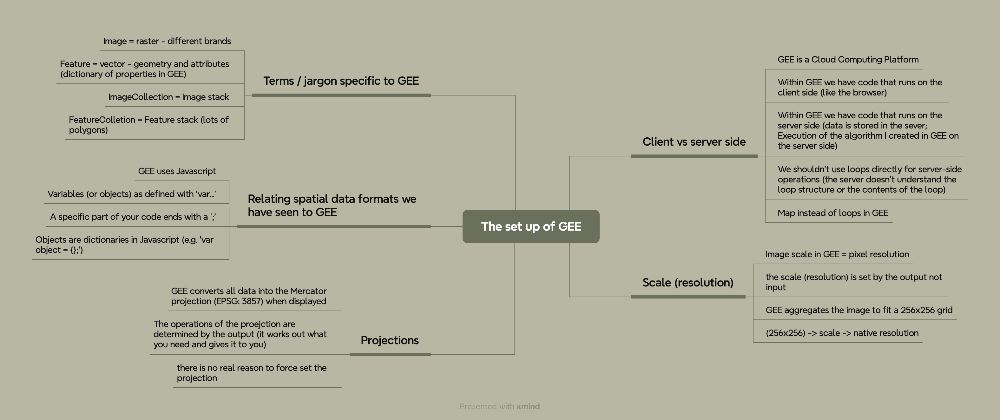
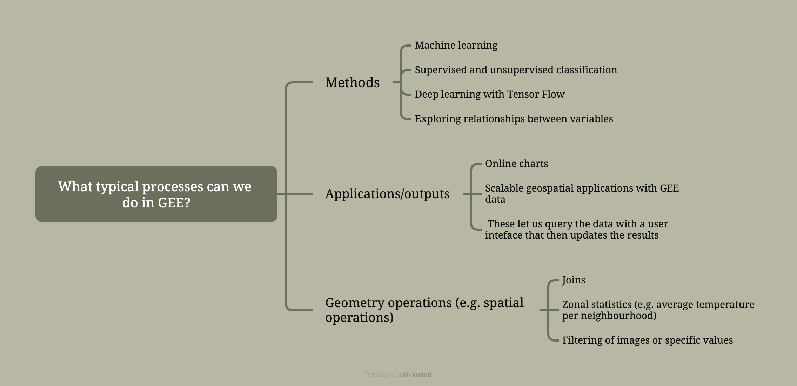
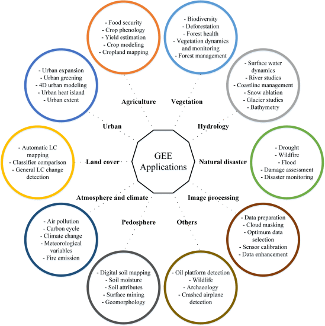

6 Week 6 - Intro to GEE
6.1 6.1 Summary:
Google Earth Engine (GEE) offers a platform enabling users to perform geospatial analysis on Google’s infrastructure. Users could interact with this platform through multiple ways. The Code Editor, a web-based integrated development environment (IDE), allows for script writing and running. Meanwhile, the Explorer offers a simplified web application for navigating the data catalog and.running basic analyses. Additionally, the client libraries provide Python and JavaScript wrappers around their web API (refernce source: GEE).
6.1.1 6.1.1 The set up of GEE
This is a mind map summarising this section and covering the knowledge collated:

The set up of GEE mind map
6.1.2 6.1.2 GEE in action (how we use it)
What I think should be remembered on using GEE is this figure, which contains the location of each interactive action button:

Code editor of GEE (source: CASA0023)
{kind=link}
Overall, what typical processes can we do in GEE? Please see this mind map below:

Mind map of what typical processes we could do in GEE
In this week, we covered what we could do in GEE (click the link to review the knowledge or code):
6.1.3 6.1.3 Summary of practical for this week
This week’s practical focused on the basics of using Google Earth Engine (GEE), including how to construct points, load and process Landsat image data on GEE, as well as how to perform image clipping, texture analysis, and Principal Component Analysis (PCA). Finally, we also learned exporting data and calculating NDVI in GEE.
Using GEE has allowed me to get the results of various analysis much more quickly, especially the texture enhancement and PCA analysis much faster than week three. Below are some of the results I’ve extracted from following the tutorials in practical:

Texture

PCA band 1 and 2
I had partly forgotten about the analysis of the bright places in the image obtained by texture enhancement, so here’s a recap:
In remote sensing texture analysis, bright areas usually indicate regions of high texture variation or contrast. This may mean:
Complex surface textures: For example, urban areas, forests, or agricultural fields, where the surface texture varies significantly due to different land features.
High texture contrast areas: Compared to surrounding environments, these regions exhibit rapid spatial changes in surface characteristics, showing high-contrast texture features.
Changes in land features or geomorphology: such as the boundaries between bare soil and vegetated areas, where texture analysis can reveal details of these geomorphological changes.
6.2 6.2 Application:
Firstly, GEE has a very wide range of applications and could be used in the areas described in the image below (although it may have been used by someone else I think the image still sums up the wide range of applications for GEE quite well):

The figure of GEE Applications (Amani et al., 2020)
I think that NDVI has a wide range of applications even though it is a relatively common method of ratio enhancement in remotely sensing. In fact, the characteristics of GEE as a cloud computing platform could be seen from the academic research related to GEE and NDVI. That is, it makes it possible to calculate and analyse NDVI for large scale and long time series data:
Ruifeng et al. (2023) used the Google Earth Engine (GEE) platform and Landsat Normalized Difference Vegetation Index (NDVI) datasets, employing the Otsu algorithm to extract the spatial extent of limestone mining areas in Qingzhou City, Shandong Province, from 1985 to 2020. The research identified that the mining areas were primarily located in Shaozhuang Town, Wangfu Street, and the northern part of Miaozi Town, expanding from 2.0 km² in 1985 to 19.5 km² in 2020, more than a tenfold increase (Ruifeng et al., 2023). The advantage of utilizing NDVI and the GEE platform is the ability to efficiently process large datasets and rapidly identify overall changes in vegetation cover. However, its limitation lies in the inability to analyze the causes of those changes, merely highlighting areas where there has been a general increase or decrease in vegetation cover.
Mandal and Hosaka (2020) utilized the Google Earth Engine (GEE) platform and Landsat satellite images to assess the impact of cyclone disturbances on the Sundarbans mangrove forests in Bangladesh and India by evaluating changes in the Normalized Difference Vegetation Index (NDVI) before and after 21 cyclones between 1988 and 2016. The results showed that the affected forest area ranged from 0.5% to 24.1%, with the 2007 Sidr cyclone and a 1988 cyclone affecting 24.1% and 20.4% of the forest area, respectively (Mandal and Hosaka, 2020). The study found a significant positive correlation between cyclone maximum wind speed and the affected forest area, especially when the wind speed exceeded 101.9 km/h, significantly increasing the impact on forests (Mandal and Hosaka, 2020). The advantage of using NDVI and the GEE platform for analysis lies in the ability to process large datasets over long time series efficiently, providing a rapid and effective assessment of cyclone impacts on forests. However, this method is limited in that it captures changes in vegetation cover but cannot directly reflect the physical damage to tree structures caused by cyclones, or other ecological effects triggered by cyclones.
6.3 6.3 Reflection:
The long awaited Google Earth Engine section has arrived! Actually, I have used GEE in my undergraduate dissertation and have also attended GEE trainings for representatives from various Chinese universities at a Chinese academic conference. At that time I have deeply felt the powerfulness of GEE because of its cloud computing attribute. A lot of work that cannot be done on a PC is possible with GEE, especially for analysing and researching large geographical areas and long time series. And I think GEE is much easier to use than ENVI or SNAP, as I only need to enter the code. For the same task, GEE is much faster than a PC.
It’s been more than a year since I’ve used GEE, so I’ve made a mind map to summarise and organise the content of this week’s lessons to make it easier for me to review later. I reviewed the basic operations of GEE such as loading and exporting, and I have also learnt how to do texture, PCA and other image enhancement techniques in GEE, which is very beneficial. Through reading the literature it has also been demonstrated that GEE works well for processing and analysing long time series and large scale data.
The power of GEE goes far beyond this week’s content, machine learning algorithms and other advanced algorithmic applications analysis could also be done with the help of GEE, which I am very interested in, and I look forward to exploring and learning more deeply about GEE next week!
It occurs to me that there is also a geographic cloud computing platform being developed by a company in China. In China, the geographic cloud computing platform now available is developed by a Chinese company called ‘PIESAT’, which is called ‘PIE-Engine’ where you are able to do many same things as GEE. In fact, the senior vice president of their company is a visiting professor to my undergraduate major, so I know the existence of ‘PIE-Engine’. I’m sure it would be very interesting to explore ‘PIE-Engine’ while studying GEE.
6.4 6.4 Reference list
Amani, M., Ghorbanian, A., Ahmadi, S. A., Kakooei, M., Moghimi, A., Mirmazloumi, S. M., Moghaddam, S. H. A., Mahdavi, S., Ghahremanloo, M., Parsian, S., Wu, Q., and Brisco, B. (2020) Google Earth Engine Cloud Computing Platform for Remote Sensing Big Data Applications: A Comprehensive Review. IEEE journal of selected topics in applied earth observations and remote sensing. [Online] 135326–5350. DOI: 10.1109/JSTARS.2020.3021052
Mandal, M. S. H. and Hosaka, T. (2020) Assessing cyclone disturbances (1988–2016) in the Sundarbans mangrove forests using Landsat and Google Earth Engine. Natural hazards (Dordrecht). [Online] 102 (1), 133–150. DOI: 10.1007/s11069-020-03914-z
Ruifeng, L., Kai, Y., Xing, L., Xiaoli, L., Xitao, Z., Xiaocheng, G., Juan, F., and Shixin, C. (2023) Extraction and spatiotemporal changes of open-pit mines during 1985–2020 using Google Earth Engine: A case study of Qingzhou City, Shandong Province, China. Environmental monitoring and assessment. [Online] 195 (1), 209–209. DOI: 10.1007/s10661-022-10837-8